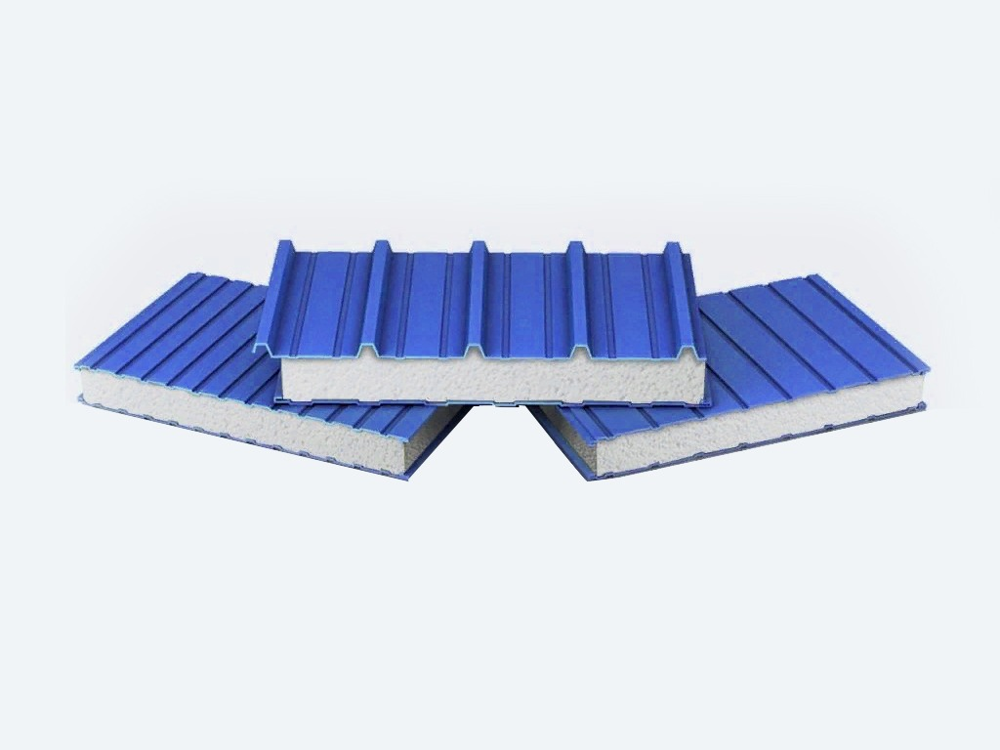

Панели из пенополистирола отличаются исключительной легкостью и 100% влагостойкостью. Это наиболее экономичное решение для быстрого возведения теплых складов и производственных цехов.
✅ Преимущество: Индивидуальные размеры и быстрые сроки изготовления. Бесплатный раскрой сэндвич-панелей для наших клиентов.